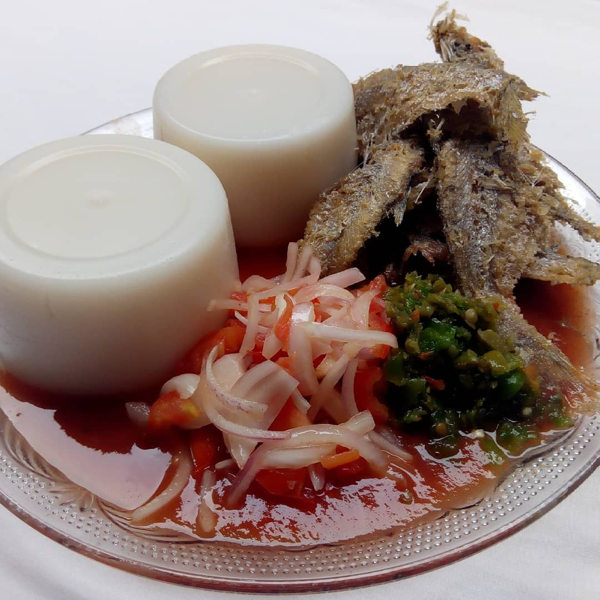

L'akassa est une pâte culinaire d'origine d'Afrique de l'Ouest (Bénin, Nigéria, Togo, etc...), faite à base de maïs fermenté, moulu et cuit, qui se déguste avec des sauces riches en poisson ou en viande ou avec le monyo. Sa préparation implique le trempage et la fermentation des graines de maïs, leur broyages, la filtration pour obtenir l'amidon, puis la cuisson de cet amidon jusqu'à obtenir une pâte lisse.
NB : N'oubliez pas d'ajouter à la pâte petit à petit de l'eau si elle devient trop épaisse.